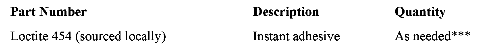
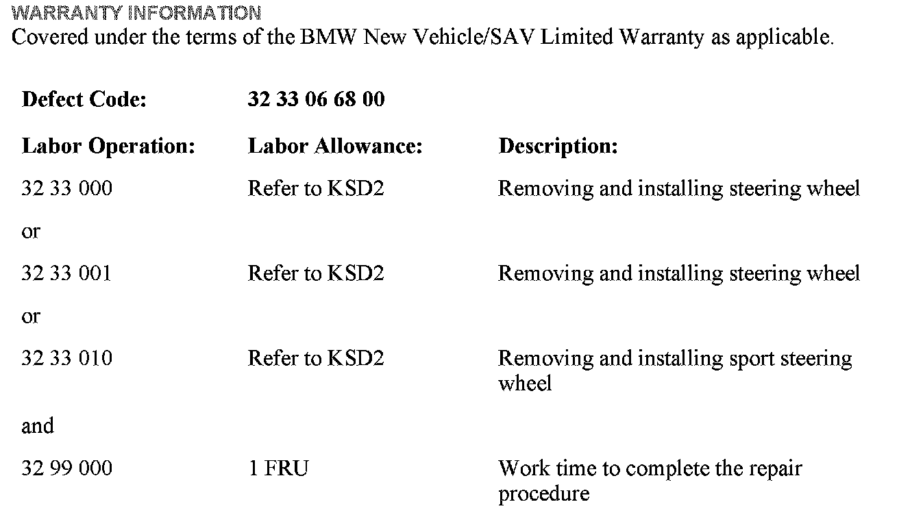
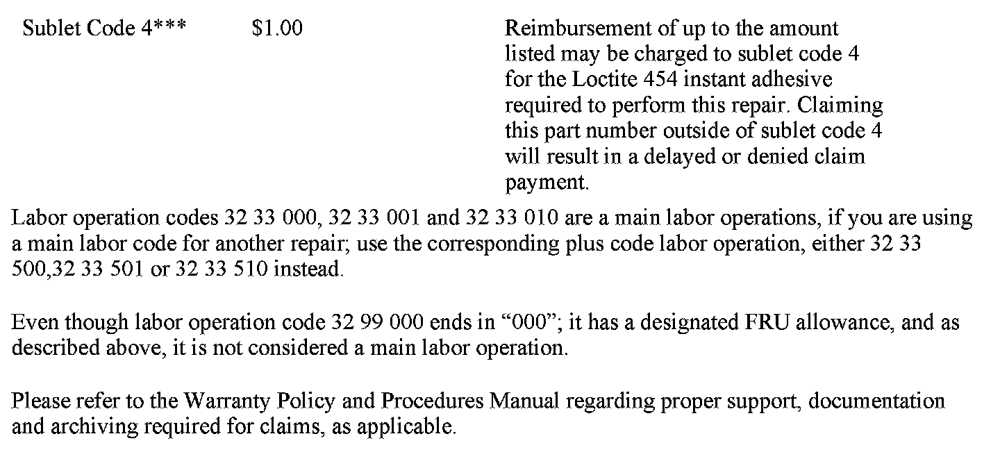
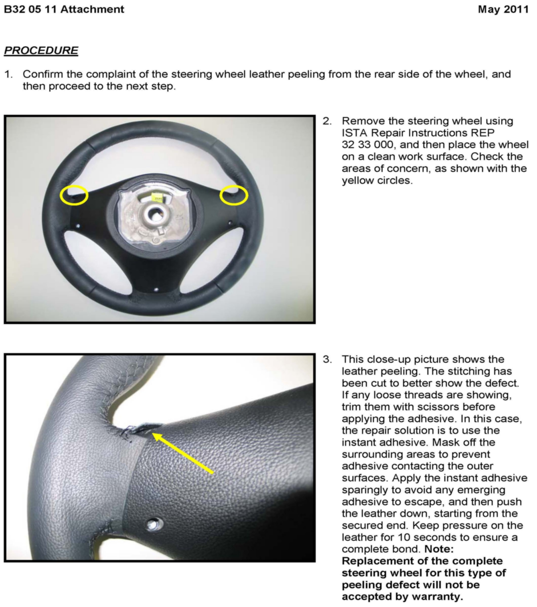
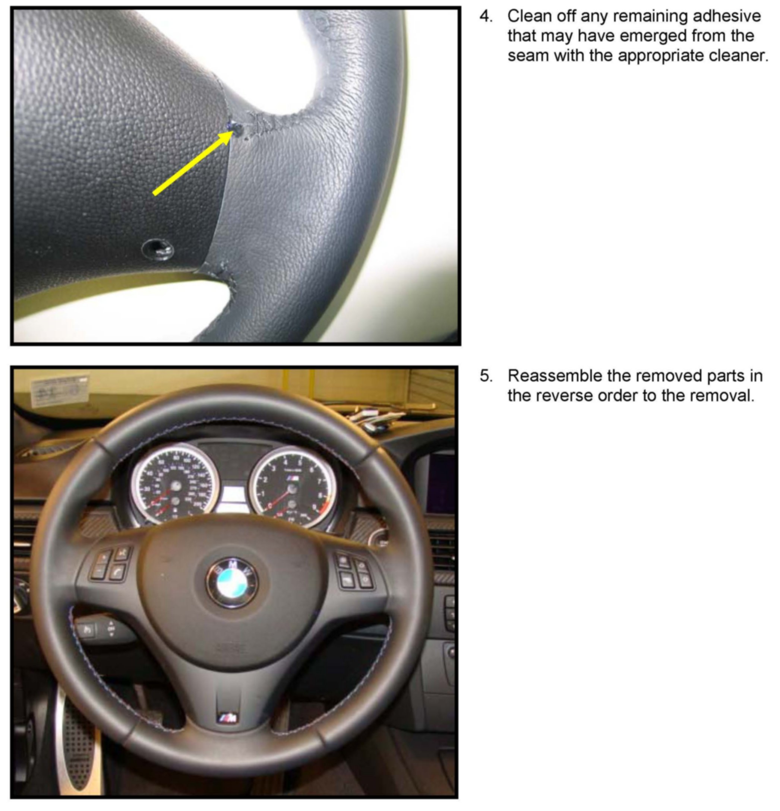

Steering - Steering Wheel Leather Peeling From The Rear
SI B32 05 11Steering and Wheel Alignment
May 2011
Technical Service
SUBJECT
Steering Wheel Leather Cover Is Peeling
MODEL
All
SITUATION
The steering wheel leather is peeling away from the rear side of the steering wheel.
CAUSE
The adhesive application is poor or insufficient.
CORRECTION
Apply instant adhesive to the affected areas.
PROCEDURE
Refer to the attachment.
Replacement of the complete steering wheel for this peeling issue will not be accepted by warranty.

PARTS INFORMATION


WARRANTY INFORMATION
ATTACHMENTS


B320511 - Procedure.